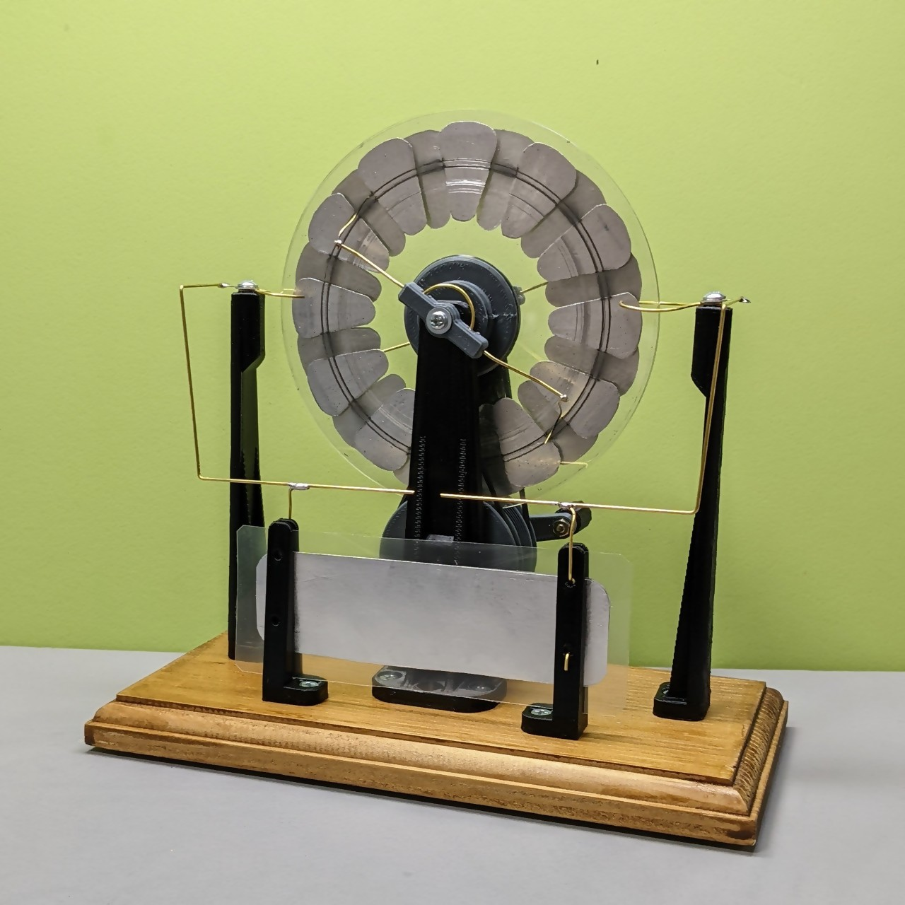

いらない CD とアルミテープと3Dプリンタでウィムズハースト起電機作ってみた
2022/05/22 |
更新履歴

回転する 2 枚の円盤と電極を使って、初期状態の僅かな電荷の偏りを静電誘導によって増幅し蓄積する装置です。乾燥する時期になるとよく放電します。
CD のラベルはモノによってはガムテープで剥がせるそうなんですが、うちにあったのは剥がれなかったので電撃で吹き飛ばしました。
電荷を溜める部分は典型的にはライデン瓶が用いられますが、今回はクリアファイルから切り出したシートの両面にアルミテープを貼ってコンデンサを構成しました。
いらないCDとアルミテープと3Dプリンタでウィムズハースト起電機できた🍣 #shapolab pic.twitter.com/mwuRKoYA1K
— シャポコ🌵 (@shapoco) May 22, 2022
フランクリンのベル
フランクリンのベル。 #shapolab pic.twitter.com/9qjD9pXsCj
— シャポコ🌵 (@shapoco) May 22, 2022
泳ぐ砂鉄
シャーレのフチにアルミテープを貼り、油を張って、砂鉄をちらし、上から電極を近づけている。
一度やってみたかったやつ #shapolab pic.twitter.com/vLRbeuu029
— シャポコ🌵 (@shapoco) May 23, 2022